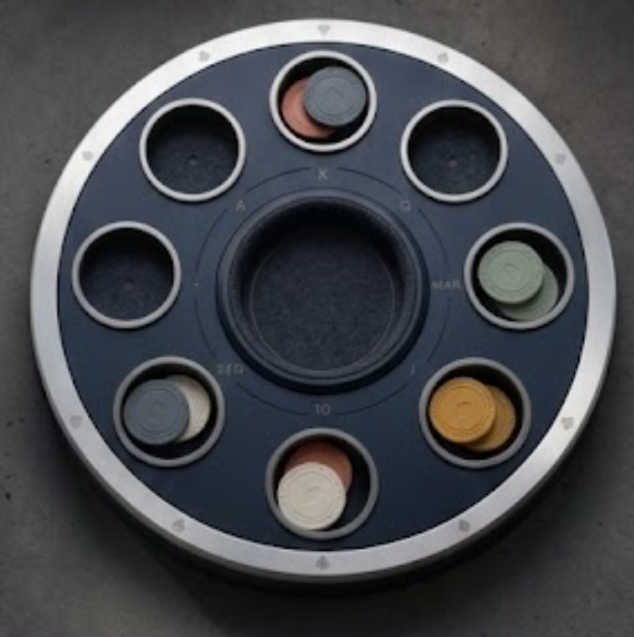

poch-lead
Integriert39-pt-R1, gemessene 8+1-Assetanker, Melde-/Poch-Auszahlung, Gegner-Tendenz und responsive Phase-2-Aktionen zusammengeführt
GOTY 2026 Integrationssicht
Farbe, Material, Relief und Muldenkontakt werden ausschließlich gegen diese Referenz entschieden. Die gemessene 8+1-Geometrie bleibt erhalten. Der aktuelle Materialstand ist ausdrücklich nicht freigegeben: Ansicht, sichtbare untere Seitenwand, gerichteter Bodenschatten, Samt und R1 werden einzeln gegen das Soll kalibriert.

SCR-20260718-jszw.png
Außenprofil gemessen · Innenmulde offenVerbindlicher R1-Nordstern
Flache schwere Scheibe, breite feine Rändelzone, große tiefe W2-Blindprägung, trockene Mineraloberfläche und klarer dunkler Seitenwall. Der aktuelle Simulator-R1 ist nicht freigegeben und wird gegen diesen Beleg neu aufgebaut.

große Blindprägung · breites RändelbandMaterialkorrektur, Hintergrund und QA arbeiten getrennt. Ein read-only Gate vermisst Muldenlicht und Flor, während der mineralische Spieltisch-Untergrund separat entsteht; die Integration bleibt beim Lead. Das Statusfenster bleibt dieselbe Browserfläche.
39-pt-R1, gemessene 8+1-Assetanker, Melde-/Poch-Auszahlung, Gegner-Tendenz und responsive Phase-2-Aktionen zusammengeführt
Die abgelehnte Rundum-Abdunklung ist entfernt. Außenmulden erhalten gerichteten Schatten von oben und helleren Flor nach unten; die Innenmulde wird separat dunkler kalibriert.
Maßstab, 8+1-Anker und Containment bleiben stabil; eine neue visuelle Freigabe existiert noch nicht
Einmalige öffentliche Tendenz ohne Botparameter, Handdaten oder Aktionsvorhersage
Beobachteter Gegner, lokalisierter Titel, Erklärung und Caveat im echten Poch-Flow
AX XXXL reflowt sichtbar; 56-pt-Aktionen bleiben von Gegnern und Hand getrennt
Diese wiederverwendete cmux-Browserfläche mit direktem Soll-/Ist-Vergleich
Der Siegerwert springt nicht mehr vor der sichtbaren Materie. Erst der letzte R1-Kontakt schaltet Stack und Folgeaktionen frei. Die Flugbahn wird in jedem Frame räumlich berechnet; Reduced Motion setzt denselben Zustand ohne unsichtbare Wartezeit.

750 x 1334 · echte Simulatoraufnahme
Normal Motion
keine unsichtbare Flugzeit
667 x 375 PunkteEin Meld-Gewinn verlässt seine Mulde als einzelne schwere R1. Die Lehrlinie verschwindet im Materialmoment; der sichtbare Gewinnerstand folgt erst dem letzten Kontakt. Live Reduced Motion setzt denselben Zustand sofort, ein schneller Aktwechsel verwirft jeden alten Rückruf.

750 x 1334 · Simulator
Normal Motion
atomar ohne Restzeit
667 x 375 · kein alter KontaktNach der ersten verstandenen, öffentlichen Poch-Entscheidung erscheint genau eine beobachtungsbasierte Tendenz. Sie ersetzt den künstlichen Rollenbegriff am richtigen Gegner und erklärt sich im vorhandenen Entscheidungsblock. Accessibility XXXL vergrößert Schrift und Aktionen tatsächlich, ohne neue Overlay-Schichten.

echter geführter Poch-Flow
Resultat 72 statt 60 pt
402 x 874 Punkte
667 x 375 · echte Weiter-Aktionmain = origin/main = 502cf6fSEQ · 13 erscheint ruhig ab der ersten nicht mehr physisch darstellbaren Stufe; UI-Test 1/1 grün294 x 308 px, gemessener Radius 157,678 px; Faktor 1.085, voller R1 39 pt, sichtbar 0,1074 D/tmp/poch-phase1-material-v6.xcresult, /tmp/poch-phase2-material-v6.xcresult und /tmp/poch-phase2-material-centering-v5.xcresultMaßstabGeschlossen: 39 pt ergeben sichtbar 0,1074 Disc-Durchmesser; die Referenz liegt im selben Korridor.
ContainmentGeschlossen: gemessene Assetanker, Kreisgrenze und vollständiger echter Metallring fassen die große Hüllkurve ohne Rückskalierung oder harte Kerbe.
MaterialgewichtTechnisch belegt: größere projizierte Seitenwand, engere Kontaktfuge und echte 294-x-308-Alpha-Hüllkurve; menschliche Wertigkeitsabnahme bleibt offen.
KeramikoberflächeIm Prüfstand: feine Mineralporen, dunkle Seitenwand und vereinfachtes W2-Relief ersetzen die wolkige Kunststoffanmutung.
SamtbodenOffen nach Nahvergleich: kein Rundum-AO; oberer Wandwurf, unterer Flor und dunklere Innenmulde werden gegen das Soll vermessen.
Asset-PipelineOffen für diesen Pass: Graphit und Außenmetall bleiben deterministisch; Muldenwand, Samtlicht und mineralischer Spieltisch-Untergrund werden neu integriert.
LesbarkeitBeobachten: Gravuren sind absichtlich sekundär, Werte müssen dennoch eindeutig bleiben.
Dynamic TypeGeschlossen für Phase-2-Ergebnis: echter Reflow auf SE3, 667-x-375 und 402-pt-Portrait.
WertsemantikGeschlossen: erst oberhalb der physischen Kapazität ergänzt die Gravur den öffentlichen Wert.
HardwaregefühlOffen: Keramikkontakt, Audio und Taptic-Charakter brauchen die Geräteabnahme.